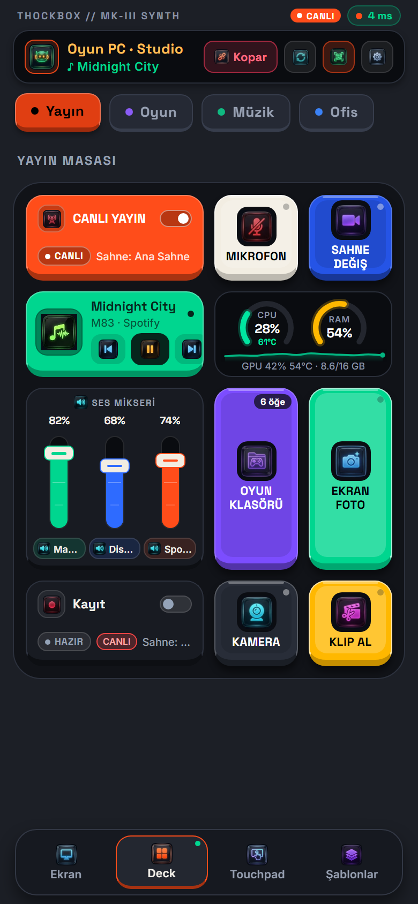
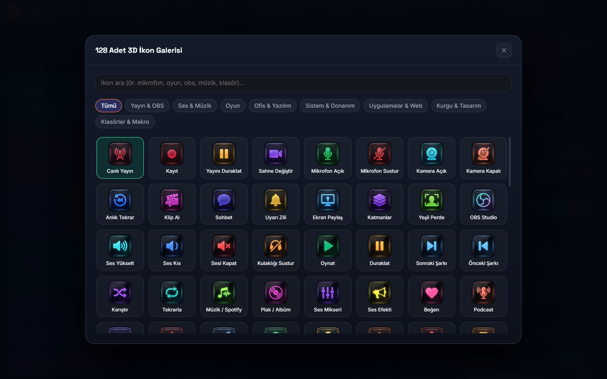
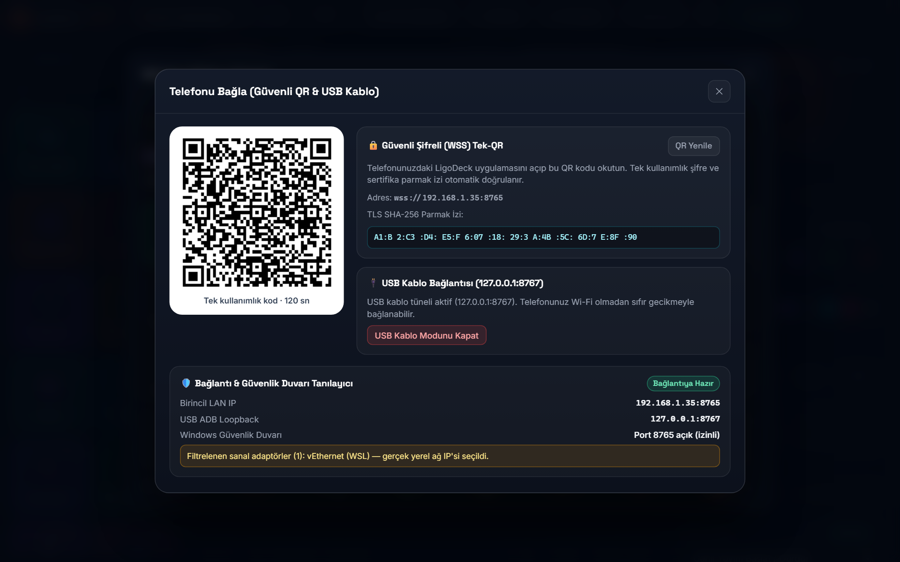
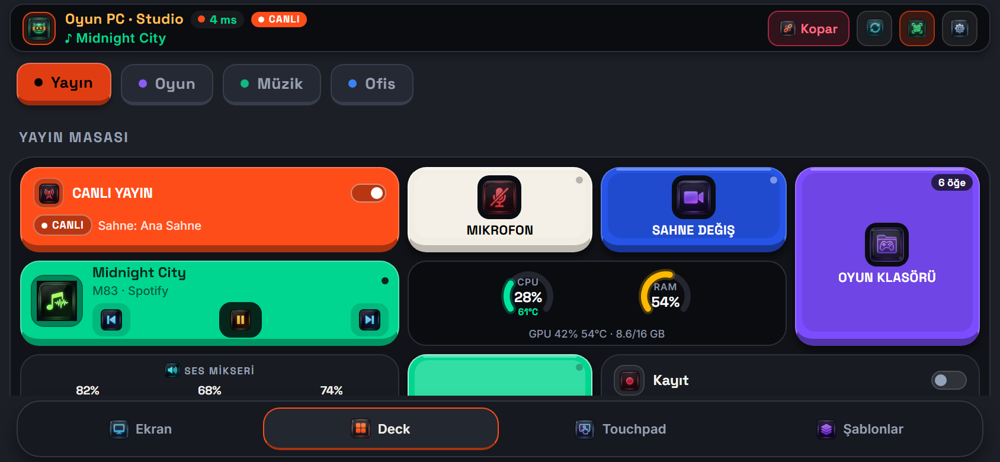

ThockBox MK-III
Telefonunu mekanik 3D makro konsolu, canlı PC ekran kumandası, DirectInput oyun deck’i ve 8 donanım widget’ına dönüştür. Discord, OBS Studio, Spotify ve tüm özellikler %100 ücretsiz (kendin dilediğin gibi ata) — 1 ücretsiz Master Ana Şablon hediye, 5 hazır Pro şablon isteğe bağlı!
Windows Masaüstü Stüdyosunu İndir
Kurulum dosyasını çalıştır, masaüstü stüdyoda tek QR kodu telefonunla okut ve 45 saniyede konsolun hazır olsun.
- 1 Chrome / Edge indirme uyarısı: "Yaygın olarak indirilmiyor" veya "Sakla" bildirimi görürsen indirme çubuğundaki ⋯ (veya ^) simgesinden "Sakla" → "Yine de sakla" seçeneğine tıkla.
- 2 Windows SmartScreen mavi ekranı: Dosyayı açtığında "Windows bilgisayarınızı korudu" penceresi çıkarsa sol alttaki "Ek bilgi" bağlantısına, ardından "Yine de çalıştır" butonuna bas.
SHA-256 Dosya Doğrulama Kodlarını Göster
ThockBox-Setup-2.6.0.exe: 84F2108FBBD2724C896FEF62F1C0D0B25BD2F6076B023BDFC313AE11273EEC6C
ThockBox-2.6.0-portable.exe: BDA4F8505D9DEB7749E24813CD5D779B8AC7586A774D748C4F217216CB5087E1
Masaüstü Stüdyo & 3D Mobil Konsol.










Kur ve stüdyoyu aç
ThockBox-Setup-2.6.0.exe ile 10 saniyede kur; ücretsiz Master Ana Şablon ve kısa örnek senaryoyla hemen başla. Sonraki sürümler otomatik güncellenir.
Tek QR kodu tara
Masaüstündeki "QR Bağlan" penceresini telefonundan okut. Bağlantı otomatik şifrelenir; istersen USB kablo ile bağlan.
Anında kontrol et
Stüdyoda sürükle-bırak yaptığın her tuş, tema ve klasör anında telefonuna ve ana ekran widget'ına yansır.
Rakiplerin abonelikle sattığı her şey, %100 ücretsiz.
Yerleşik OBS Studio v5
Sahne değiştir, yayını veya kaydı başlat/durdur, canlı kırmızı CANLI/KAYIT rozetiyle durumu anında gör.
Spotify & Ses Mikseri
Canlı albüm kapağıyla medya kontrolü ve Master, Discord, Spotify, oyunlar için ayrı dikey dokunmatik ses fader'ları.
8 Ultra-Modern Android Widget
Kontrol Konsolu, PC Monitör Pro, CPU & Saat, GPU & VRAM, Termal & Fanlar, Ağ & Disk, Termal Kokpit ve Medya: ışıklı kadranlar, canlı grafikler ve uygulamayı açmadan çalışan sessiz tuşlar.
Canlı PC Ekranı, Touchpad & PC Araçları
PC ekranını telefonundan canlı izle ve dokunarak yönet; 60Hz hassas Touchpad & Türkçe klavye, çift yönlü pano, çift onaylı PC güç kontrolü ve sunum kumandası.
128 3D İkon & 6 Donanım Teması
Tactile Synth, Chroma Ceramic, Pocket Bounce, Artisan GMK, Saf Siyah OLED ve WCAG AAA Yüksek Kontrast + gerçek mekanik tuş sesi.
TLS Şifreli + USB ADB + Gizlilik
Hesap yok, bulut yok. SHA-256 sertifika sabitlemeli yerel WSS veya USB kablolu sıfır gecikmeli bağlantı.
5 Hazır Pro Şablon Paketi, 5 Sanat Duvar Kağıdı & 15 3D Rozet
Discord, OBS, oyun makroları, Canlı PC Ekranı, Touchpad, ses mikseri ve 8 Android widget sonsuza dek %100 ücretsizdir — abone olmadan da her tuşu kendin ücretsiz atayabilir, 1 ücretsiz Master Ana Şablonla hemen başlayabilir, kendi oluşturduğun profilleri .thockbox ile %100 ücretsiz paylaşabilirsin. İsteğe bağlı Pro Pass; 5 resmi hazır Pro şablonu, Özel Tema Stüdyosunu, 5 sanat duvar kağıdını ve 15 3D rozeti tek dokunuşta açar.